VR403 • Final Report • CDE4301 Innovation & Design Capstone • AY2025/2026 Semester 2
Enhancing PPH Training for Medical Students
A Virtual Reality simulation for Postpartum Hemorrhage management training, built on the Meta Quest 3 and developed in Unity, designed to bridge the theory-practice gap in emergency obstetric care.
Meet the Team
Group Report — National University of Singapore
.jpg)
Table of Contents
Acknowledgements
We would like to extend our heartfelt gratitude to everyone who has contributed to our project in one way or another. Your support has been invaluable in ensuring its smooth progress, and we could not have accomplished this without you.
Project Supervisor: Dr. Khoo Eng Tat
Clinical Advisor: Dr. Arundhati Gosavi, National University Hospital (NUH)
3D Artist: Mr Lim Xi Da
We would like to express our deepest appreciation to the many individuals who guided us throughout this year-long journey and provided the tools necessary to develop our product effectively. Special gratitude goes to our Project Supervisor, Dr. Khoo Eng Tat, for his constant encouragement, weekly coordination, and stimulating suggestions that helped shape our project. We are equally indebted to our Clinical Advisor, Dr. Arundhati Gosavi from the National University Hospital (NUH), whose indispensable medical expertise and practical advice were vital in ensuring the accuracy of our simulation. We extend our sincere thanks to our 3D Artist, Mr. Lim Xi Da, for his help in designing specific 3D assets used in our virtual environment, and to our Lab Technician, Matthew, for his invaluable technical help and setup advice. Our heartfelt thanks also go to Liu Chang for her immense support and inspiring guidance throughout our programme journey, as well as to Cheng Haojie for his valuable technical assistance and suggestions. Finally, we are deeply grateful to all the participants who generously gave their time to take part in our user studies and provided the helpful feedback needed to refine our final prototype.
1. Introduction
1.1 Problem Statement & Background
Postpartum Hemorrhage (PPH) is one of the most critical obstetric emergencies in modern medicine, defined as blood loss exceeding 500 mL following a vaginal delivery or 1,000 mL following a caesarean section. It remains the leading cause of maternal mortality worldwide, accounting for approximately 27% of all maternal deaths globally, translating to roughly 14 million cases and 70,000 deaths annually (Say et al., 2014; WHO, 2023). The condition can deteriorate rapidly, with patients losing upwards of 1,000 mL of blood before displaying visible signs of haemodynamic instability, leaving clinicians with an extremely narrow window for effective intervention (Rath, 2021). In Singapore, while maternal mortality rates are significantly lower than global averages, PPH remains a leading cause of maternal morbidity, with severe cases resulting in ICU admissions, emergency hysterectomies, and long-term psychological trauma (Chauke et al., 2023).
Despite its clinical significance, the high-acuity, low-frequency nature of PPH means that medical students in Singapore rarely have the opportunity to engage actively in its management during clinical rotations. Because these events are life-threatening and demand immediate senior-level intervention, students are ethically and practically relegated to the role of passive observers. They may witness a PPH resuscitation in the room, but are seldom given the opportunity to lead, or even participate in, the decision-making process. This creates a significant theory-practice gap, where students possess the physiological knowledge of PPH management but lack the environmental exposure required to execute these protocols confidently under intense pressure.
Current training modalities, primarily consisting of didactic lectures and scheduled manikin-based simulations, fail to bridge this gap effectively. Lectures provide theoretical grounding but lack the sensory immersion needed to prepare students for the visual shock of rapid blood loss and the psychological pressure of a deteriorating patient. Manikin-based simulations, while more hands-on, are limited by their high cost, resource intensity, and logistical complexity, meaning students often receive only one or two practice opportunities per academic year. This frequency is far below the threshold required for procedural confidence to become reflexive. Furthermore, traditional group simulations often suffer from the "observer effect," where only one student takes the lead while peers watch passively, resulting in inconsistent skill acquisition across the cohort.
Without sufficient hands-on exposure, students enter their housemanship with theoretical confidence but practical hesitation. When confronted with a real PPH in a labor ward, this hesitation can manifest as fixation errors, delayed escalation, or an inability to prioritise interventions under pressure. Consequently, there is an urgent need for a training solution that provides a high-fidelity, risk-free environment where students can move beyond passive observation and develop the procedural competence and clinical reflexes required to manage a postpartum hemorrhage effectively.
1.2 Novelty and Value Proposition
To address the training gaps identified in current obstetric education, this project proposes the development of a Virtual Reality (VR) simulation specifically designed for PPH management training. Built on the Meta Quest 3 headset and developed in Unity, the simulation places the learner inside a virtual NUH labor ward where they must independently manage a deteriorating postpartum patient through a structured sequence of clinical interventions. This directly tackles the core problem: that medical students currently have no safe, repeatable, and hands-on platform to practice PPH management before entering the real ward.
The novelty of this solution lies in its ability to transcend the limitations of traditional manikin-based simulation. Manikins are inherently limited by their static nature and high logistical requirements, meaning students receive little more than one or two practice opportunities per year. In contrast, the Meta Quest 3 is portable and standalone, allowing a student to engage in a high-intensity PPH drill multiple times in a single session without any additional infrastructure. This enables the high-frequency repetition of procedural sequences until actions become reflexive, functioning as a flight simulator for obstetric emergencies and ensuring that a student's first experience managing a life-threatening bleed is not on a live patient (Ericsson, 2004).
By concentrating development efforts on procedural accuracy and sequential clinical workflow, this simulation provides a robust and scalable bridge between theoretical classroom knowledge and the high-stakes reality of the delivery suite.
1.3 Scope Refinement following Interim Assessment
Following our interim project demonstration and clinician feedback, we refined the project scope to better align with the Final Year Project timeline. While our initial proposal included environmental realism, empathy training, and voice recognition, the complexity of developing natural language processing and conversational branching proved unfeasible within the timeframe. Attempting to integrate all three elements risked compromising the stability of the core simulation.
Consequently, we pivoted from an open-ended, highly realistic environment to a structured, guided sequence focused on clinical management. This ensures that learners move through the correct steps in the right order, helping them build a strong, systematic approach to decision-making without the added complexity of open-ended interactions. While this is more constrained than what we initially envisioned, it allowed us to focus our efforts on getting the clinical workflow right, ensuring the system runs reliably, and providing meaningful feedback to users.
This refinement in scope allowed us to come up with a more streamlined and reliable learning instrument, that prioritises on building core procedural skills and clinical sequencing first, thus creating a solid foundation that future iterations can build on, such as the ones discussed in Section 7.3.
2. Design Strategy
2.1 Identified Training Gaps
Our research and discussions with Dr. Arundhati revealed two primary reasons traditional medical education fails to prepare students for real-world Postpartum Hemorrhage (PPH) emergencies. The first relates to cognitive load. In an actual PPH scenario, students are expected to do multiple things at once, such as monitoring rapidly changing vital signs, recalling drug dosages, and carrying out clinical interventions, all under significant time pressure. This level of multitasking is difficult to replicate in lectures or occasional manikin-based sessions. Dr. Arundhati also highlighted that cognitive freezing is commonly seen in junior doctors when they face their first obstetric emergency, which reinforces this gap.
The second issue is the development of motor skills. Key tasks such as setting up IV access, performing uterine massage, and administering uterotonics in the correct sequence require hands-on repetition to build muscle memory. However, with formal PPH training typically taking place only twice a year, students simply do not get enough exposure for these skills to become instinctive. Taken together, these gaps point to the need for a training approach that brings both cognitive pressure and procedural practice into one accessible platform, which this VR simulation is designed to provide.
2.2 Subject Matter Research
The development of this VR training module was an iterative process driven by continuous professional oversight and evidence-based medical research. The primary objective was to ensure that every virtual interaction, from identifying a risk factor to administering medication mirrors real-world high-stakes obstetrics.
2.2.1 Doctor Consultations
The primary clinical advisor for this project is Dr Arundhati from the National University of Singapore (NUH). Our team engaged in a consistent consultation schedule, initially meeting on a weekly and biweekly basis, and later transitioning to monthly sessions as the development progressed. These consultations were critical for validating the technical and medical accuracy of the simulation.
Dr Arundhati provided essential resources, as shown in figures 1 to 3, including a specialised PPH textbook, which served as the primary medical reference for building the scenario's logic. This text allowed the team to move beyond the general medical knowledge and incorporate specific, evidence-based metrics, such as the relationship between material hemoglobin levels and physiological reserve. These expert sessions highlighted a critical training gap: while medical students are often proficient in theoretical management protocols, they lack the experiential exposure to manage a patient who is rapidly deteriorating. Consequently, the research focused on how to translate Dr Arundhati's real-world expertise into guided clinical reasoning prompts that mirror the mentorship a junior doctor would receive in a real delivery ward.
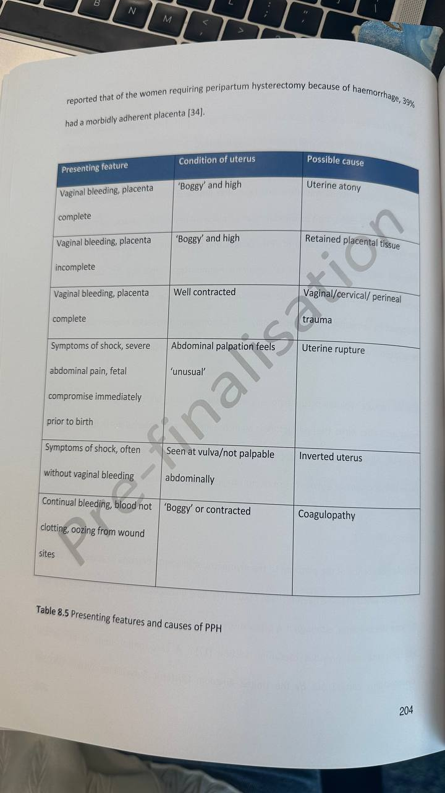
Figure 1: Table presenting features and causes of PPH from specialised PPH textbook
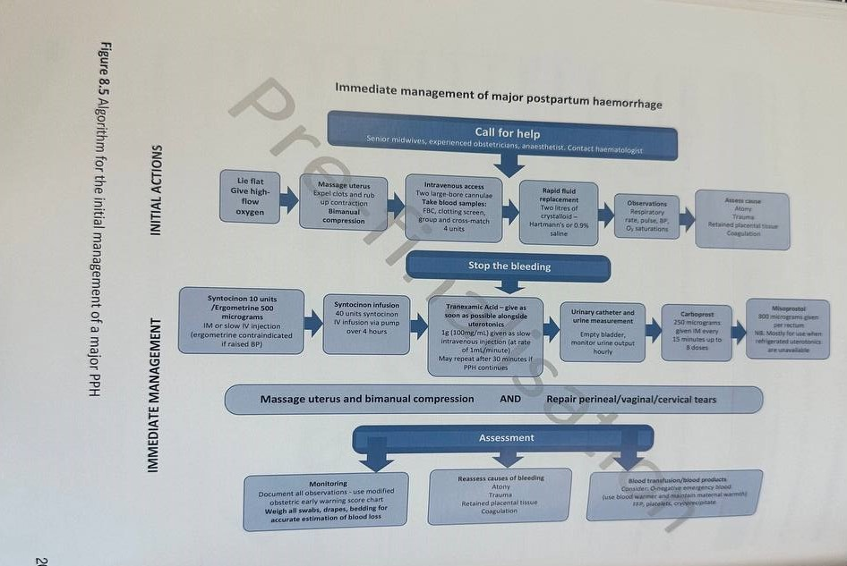
Figure 2: Flowchart on immediate management of major PPH from specialised PPH textbook
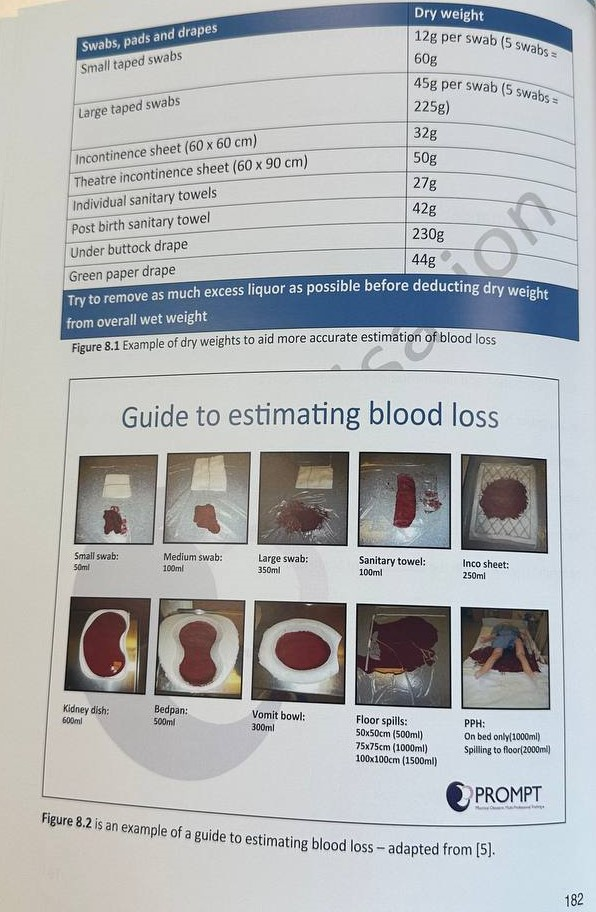
Figure 3: Guide to estimate blood loss from specialised PPH textbook
2.2.2 Clinical Workflow and Scenario Logic
The clinical workflow developed for this simulation is structured to guide the learner through a realistic progression of PPH management, transitioning from routine postpartum monitoring to active crisis response. By using a deteriorating scenario, learners start with a stable patient before identifying emerging signs of postpartum hemorrhage. To ground the scenario in reality, the patient profile includes specific risk factors like maternal anemia and fetal macrosomia, teaching students that PPH is often predictable rather than a random event.
Once the crisis begins, the simulation follows a structured emergency protocol, covering everything from bleeding recognition and IV access to blood tests and drug administration. To reinforce systematic care, the workflow is sequential, requiring one step to be mastered before the next unlocks. The simulation also incorporates physiological indicators such as heart rate and blood pressure changing dynamically as the scenario progresses. Learners are required to perform both procedural tasks and clinical decision-making simultaneously, ensuring the experience addresses technical competence and analytical reasoning in equal measure.

Figure 4: PPH Management flow chart
2.3 Design Requirements/Specifications
The design requirements for the VR-based PPH simulation are structured to ensure the system is functional, realistic, user-friendly, and educationally effective. Requirements are organised across four categories which are: Functional, Usability, Educational, and Technical and presented below with measurable units of evaluation to support objective assessment.
| Category | Specification | Requirement | Unit of Evaluation |
|---|---|---|---|
| Functional | Interactive tool support | Users can select and interact with clinical tools (IV equipment, medication trays, monitors) via intuitive controls | Task completion rate ≥ 90% |
| Sequential task flow enforcement | System enforces correct procedural order (e.g., IV access before medication administration); out-of-sequence actions are blocked with feedback | 0 allowable sequence violations | |
| Dynamic patient response | Vital signs and bleeding severity indicators update within 2 seconds of user action | Response latency ≤ 2 seconds | |
| Scenario progression | Simulation supports at least 3 scenario stages with distinct clinical states | ≥ 3 stages per scenario | |
| Feedback delivery | Immediate feedback provided for both correct and incorrect actions | Feedback delay ≤ 1 second | |
| Usability | Interface intuitiveness | First-time users can navigate core tasks without external instruction | ≥ 80% task success rate on first attempt |
| Cognitive load management | Instructions limited to ≤ 2 sentences per prompt; no more than 3 concurrent on-screen prompts | ≤ 3 simultaneous on-screen cues | |
| Error recovery | Users can retry incorrect steps without simulation restart; maximum 3 retry attempts per task | ≤ 3 retry attempts allowed per step | |
| User satisfaction | Post-session usability rating assessed via standardised scale (e.g., SUS) | SUS score ≥ 70 / 100 | |
| Educational | Learning objective coverage | Simulation addresses ≥ 5 core PPH management competencies (recognition, IV access, uterotonic use, escalation, communication) | ≥ 5 competencies assessed |
| Active participation | Learner must complete ≥ 80% of interactive decision points to progress through scenario | ≥ 80% participation rate | |
| Progressive difficulty / scaffolding | Early stages provide ≥ 3 guided prompts per task; later stages reduce prompts to ≤ 1 per task | Prompt reduction across ≥ 2 difficulty levels | |
| Error-based learning | Incorrect actions trigger explanatory feedback with clinical rationale before allowing retry | 100% of errors include rationale feedback | |
| Knowledge retention | Post-simulation assessment score improvement vs. pre-simulation baseline | ≥ 20% improvement in assessment score | |
| Technical | System performance / latency | Simulation renders at stable frame rate with no perceptible lag during interactions | Frame rate ≥ 72 fps; interaction latency ≤ 100 ms |
| Visual realism | Clinical environment and instruments modelled with sufficient detail to be identifiable by clinical staff | ≥ 85% object recognition accuracy by target users | |
| System stability | No critical crashes or freezes during a full simulation session | 0 critical failures per session | |
| Session duration | Full scenario completable within a defined time window appropriate for training context | 15–30 minutes per session |
Table 1: Design Requirements for VR-based PPH simulation
Notes: SUS = System Usability Scale (0–100); WCAG = Web Content Accessibility Guidelines; PPH = Postpartum Haemorrhage; fps = frames per second
2.4 Development Process and Storyboarding
The development of the VR simulation followed a structured, iterative design cycle that transitioned from identifying human-centric problems to engineering a high-fidelity clinical solution. This process ensured that the final technical product was not merely a digital environment, but a targeted educational intervention designed to address the specific cognitive deficiencies and procedural hesitations of medical students. By focusing on the user experience through a structured persona, the development remained anchored in the reality of the learner's transition from theoretical knowledge to clinical application.
Phase 1: Persona Development and Problem Scaffolding
This early phase of design concentrated on developing "John," a Year 4 medical student persona. John served as an essential design thinking approach through which we would visualize and understand hidden gaps in today's medical education, which are usually overlooked in technical handbooks. We identified that even though one student has enough theoretical information to cope with standard tests, he does not have proper psychological readiness and clinical courage to become the leader of PPH resuscitation procedure. With the help of John's academic journey, we discovered that the substantial problem was not a lack of access to medical textbooks but a lack of such a learning environment where he could practice making decisions without consequences. This persona-driven research highlighted that the VR system needed to prioritise a sense of responsibility and procedural flow to effectively bridge the gap between a student's classroom confidence and their real-world clinical performance.


Figures 5, 6 & 7: User persona storyboard illustrating the learning gap faced by medical students
Phase 2: Narrative Storyboarding and Clinical Logic
With the problem defined through the lens of John's educational needs, the development shifted toward a detailed technical storyboard. We translated the established medical protocols into a narrative flow consisting of five distinct scenes. Each scene was designed with a specific "Clinical Trigger" and a corresponding "Required Action" to ensure the user remains an active participant in the care plan. For example, in the emergency recognition phase, we programmed a sensory shift: the midwife alerts the doctor that the mother has "soaked two sheets," forcing the user to perform an immediate visual estimation of blood loss. To ensure our technical development remained strictly aligned with the clinical reality of a delivery ward, we developed detailed visual storyboard mockups. These mockups were presented to our project supervisor and our clinical advisor, Dr. Arundhati, during our consultation sessions. This visual mapping allowed us to align on the user interface, feedback mechanisms, and the logical progression from diagnosis to intervention before committing the logic to Unity development.
Note: refer to Figures 1-17 in Appendix
Phase 3: Integration of Active Learning and Quiz Logic
The final stage of development involved embedding a "Pedagogical layer" directly into the VR environment. We integrated interactive "Knowledge Checks" and "Clinical Reasoning" pop-ups at critical decision points to bridge the gap between action and theory. In the Scenario Introduction, for instance, the system pauses to ask: "Is this patient at high risk for PPH?" based on the provided admission Hb of 9.6g/dL and newborn weight of 3.9kg. This forces the learner to synthesise patient data actively rather than passively observing the scene.
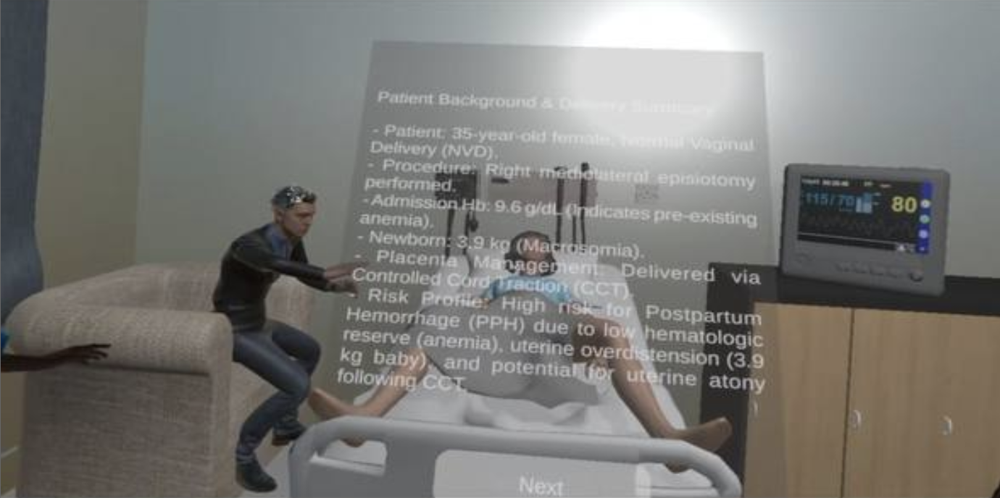
Figure 8: Active Learning Interface and Patient Data Summary within the VR Environment.
Note: Please refer to Figures 11-15 for the detailed quiz logics
Phase 4: Expert Refinement and Technical Validation
A thorough validation session with healthcare experts finalised the shift from storyboard to Unity development. In order to guarantee that the simulation accurately reflects the precise medical standards employed in regional practice, this stage resulted in the improvement of particular technological specifications. The exact dosages and procedures for uterotonics. These technical specifics guarantee that the simulation is a technically accurate medical trainer rather than only a visual experience.

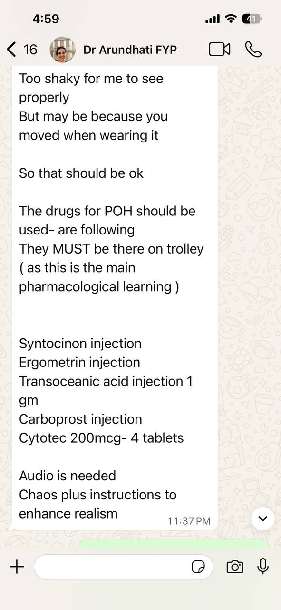
Figures 9 & 10: Screenshots of Dr Arundhati providing medical expert opinion
3. VR System Development
3.1 System Architecture & Technical Overview
The system architecture of the Postpartum Hemorrhage (PPH) VR Simulation is designed as a modular, event-driven framework optimised for high-fidelity clinical training on the Meta Quest 3 headset. The architecture is bifurcated into three primary layers: the Hardware/Driver Layer, the Middleware/SDK Layer, and the Application Logic Layer, ensuring a clear separation of concerns between the physical input and clinical consequences.
At the Hardware Layer, the system utilises the Quest 3's advanced sensors for 6 Degrees-of-Freedom (6-DoF) tracking and high-resolution passthrough. This layer communicates with the Middleware Layer via the OpenXR standard. By utilising the Meta XR Core SDK and Interaction SDK, the system translates raw sensor data into actionable "Interactors." This architectural decision allows the simulation to process complex hand-tracking data such as "pinch" and "poke" gestures and map them to virtual medical instruments with sub-millimeter precision.
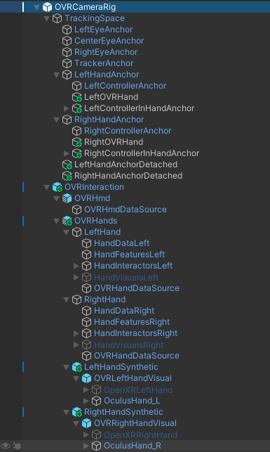
Figure 11: OVR Camera and Hands Hierarchy Setup
The Application Logic Layer is governed by a Centralised State Machine designed to handle the non-linear nature of medical emergencies. Unlike traditional linear software, this simulation utilises a Sequence Manager (implemented via the ButtonSequencer class) which leverages C# Asynchronous Coroutines. This allows the architecture to handle time-dependent clinical events such as the 10-second spreading of the StainedSheet or the staggered activation of NurseAudio without freezing the main execution thread. By using IEnumerator functions, the system can "yield" execution, effectively creating a "living" medical environment where vitals (e.g., slowBeat vs. fastBeat) and visual cues change dynamically based on the user's progress.
A critical component of this architecture is the Interaction Wrapper and Event System. By employing the PointableUnityEventWrapper, the system decouples the physical interaction from the logic. When a user interacts with a Syringe, the architecture does not just trigger a static response; it queries a Validation Layer (the TrayItemChecker). This layer compares the user's action against a predefined procedural array (objectHighlighters and placementGuides). If the interaction matches the expected clinical step, the system updates the global state; if not, it triggers a visual "Glow" feedback loop via the GlowObjectCmd system.
Furthermore, the architecture includes a Spatial UI Subsystem. Because medical simulations require constant data monitoring, the system implements a dynamic UI placement logic. Using the SyringeCollisionPopup script, the architecture calculates the contact point between the Syringe and the MotherBody tag, then uses a Billboarding Algorithm to ensure the feedback canvas always faces the user's MainCamera. This ensures that critical instructional information is never lost in the 3D environment, regardless of the user's physical orientation in the room.
Finally, the data flow is optimised for the mobile chipset of the Quest 3 by utilising the Vulkan Graphics API. This architectural choice supports advanced rendering features like "Optimise Buffer Discards," which maintain a high frame rate (72Hz+) even when the simulation is managing multiple concurrent scripts, 3D audio spatialisation, and dynamic lighting for the emergency room environment. This robust architecture ensures that the simulation remains a reliable, immersive, and pedagogically sound tool for emergency obstetric training.
3.2 Unity Development & Toolkit Set up
To ensure the Virtual Reality simulation provides the necessary stress inoculation and procedural accuracy required for medical training, the development environment was strategically architected around a stable, high-performance technical stack. The implementation phase necessitated a precise configuration of software engines, graphics APIs, and custom-coded logic to translate the complex clinical algorithm into a responsive, low-latency experience on standalone hardware.
The following table details the technical infrastructure and specialised toolkit developed for this project, mapping each software component to its specific functional role in simulating a high-fidelity Postpartum Hemorrhage (PPH) event.
| Category | Component / Tool | Technical Implementation & Clinical Purpose |
|---|---|---|
| Tools & Environment | Unity 2022.3 LTS | Selected for long-term stability and compatibility with Meta Quest 3. Utilises the Universal Render Pipeline (URP) to balance visual fidelity with mobile VR performance. |
| Meta XR All-in-One SDK | Serves as the primary technical foundation for hardware tracking, passthrough, and core interaction utilities. | |
| Custom C# Toolkit | TrayItemChecker.cs | Procedural Logic Engine that Synchronises visual highlights on the medical trolley with instructional audio via audioManager.GetClipTime(). |
| SyringeCollisionPopup.cs | Spatial UI Bridge that uses a targetTag system to trigger context-sensitive instructions at the exact physical point of patient contact. | |
| ButtonSequencer.cs | Event Controller that manages scenario transitions, heart rate audio shifts, and the StainSpreader blood growth logic using asynchronous coroutines. | |
| VR Integration (Hand Tracking) | Meta Interaction SDK | Deployed via OVRInteractionComprehensive to prioritise Hand Tracking, simulating the manual dexterity required in an obstetric ward. |
| Plane Surface Logic | Defines physical interaction boundaries for the StainedSheet and UI; the Z-axis orientation calculates "Push" depth to build muscle memory. | |
| Hand Grab Poses | Maps real-time joint data via OVRHand to ensure medical instruments (syringes/forceps) are held with realistic hand geometry. | |
| Performance (Vulkan API) | Multiview Rendering | Exclusive use of Vulkan API to unlock Quest 3 GPU power, reducing CPU overhead to maintain a consistent 72Hz frame rate. |
| ASTC 6x6 Compression | Optimises texture memory footprint for hospital assets and blood-stain visuals on the headset's VRAM. | |
| Shader Prewarming | Uses a Shader Variant Collection to pre-load transparency and glow shaders, preventing runtime frame drops during emergency triggers. | |
| Build & Pipeline | Android ARM64 (IL2CPP) | Translates C# into Optimised C++ code, essential for running complex physics checks in OnTriggerEnter functions. |
| New Input System | Strictly configured to resolve conflicts between legacy Unity input and modern Meta XR requirements. | |
| Project Setup Tool | Final diagnostic gate to verify Android Manifest and OpenXR Feature Groups are correctly aligned with the hardware capabilities. |
Table 2: Unity Development Environment and Technical Toolkit
3.3 VR Scenario Design
The VR scenario is meticulously structured into five chronological stages that mirror the high-stakes environment of a delivery ward. Each scene is designed to move the learner from passive observation to active clinical intervention, using interactive quizzes and decision points to ensure that the student's mental processing is aligned with the physical actions required to save a life.
Scene 0: Scenario Introduction (Context)
The simulation commences in a relatively calm environment to establish a baseline. The learner is introduced to the patient, a 35-year-old female who has just completed a normal vaginal delivery. The primary goal of this scene is to test the student's ability to identify red flags before they escalate into an emergency.
Interactive Logic: The system presents a patient profile UI. The learner must review the admission Hb of 9.6 g/dL and the newborn's weight of 3.9kg.
The Quiz Trigger: A pop-up asks the student to identify if the patient is at high risk for PPH. This is a critical check. The clinical reasoning provided in the simulation explains that an Hb < 11 g/dL indicates anemia, which significantly reduces the patient's physiological reserve. By forcing the student to acknowledge these factors (Macrosomia and Anemia) through a "Yes/No" submission, the simulation primes them to act fast once the bleeding begins.

Figure 12: Scene 0 quiz prompt assessing learner's identification of PPH risk factors
Scene 1: Emergency Recognition (Sensory Triggering)
In this scene, the simulation shifts from data review to crisis recognition. The transition is triggered by an auditory alert from the midwife: "Doctor, she's soaked two sheets already!" This is accompanied by the visual rendering of blood spreading on the delivery bed.
The Task: The student must perform a Visual Estimation of Blood Loss (VEBL). In traditional training, blood loss is often underestimated. To combat this, the VR environment requires the student to interact with the blood-soaked linen and submit an estimate.
The Quiz Trigger: A multiple-choice prompt asks the learner to estimate the volume (e.g., 200ml, 500ml, 800ml and 1000ml). Selecting 800ml/ 1000ml is the only way to progress, reinforcing the clinical standard that any loss over 500ml constitutes an emergency. This scene teaches the student to trust clinical signs over subjective observation.
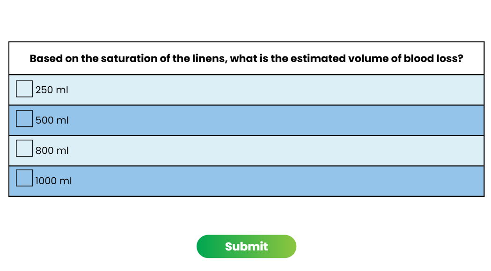
Figure 13: Scene 1 quiz prompt assessing learner visual estimation of blood loss
Scene 2: Medical Intervention (Intravenous Access)
In this scene, the simulation transitions from the identification of the crisis to the initial phase of medical stabilisation. The urgency of the situation is reinforced by the patient's deteriorating vitals on the monitor, and the student must prioritise establishing a reliable circulatory route. This stage is designed to address the motor skill deficiency in selecting and preparing high-stakes medical equipment under time pressure.
The Task: The student must interact with the medical trolley to select the appropriate Intravenous (IV) equipment for fluid resuscitation. This involves identifying the correct gauge of the cannula required for emergency volume replacement. In a real-world PPH scenario, the speed and bore-size of the IV access can determine the success of subsequent fluid and blood transfusions. The VR environment requires the student to physically pick up the cannula and prepare for insertion.
The Quiz Trigger: A multiple-choice prompt pauses the action and asks the learner: "Which size of IV cannula is most appropriate for a patient experiencing PPH?" with options including 22G, 20G, and 16G/18G. Selecting the 16G or 18G large-bore cannula is the only way to progress. This reinforces the clinical logic that large-bore access is mandatory for rapid resuscitation. The scene teaches the student that procedural precision is just as vital as diagnostic speed during an obstetric emergency.

Figure 14: Scene 2 quiz prompt assessing learner identification of correct gauge of the cannula required
Scene 3: Medical Intervention (Blood Test and Laboratory Analysis)
In this scene, the simulation moves from the physical setup of the IV to the essential task of diagnostic quantification. While the IV access allows for the administration of fluids and medications, a formal blood test is required to assess the patient's current physiological state and prepare for potential deterioration. This stage is designed to teach the student that physical observation must be supported by accurate laboratory data to provide a comprehensive clinical picture.
The Task: The student must utilise the previously established large-bore IV line to draw a series of blood samples. In the VR environment, this requires a specific sequence of actions: selecting the correct color-coded collection tubes from the medical trolley. This reinforces the procedural accuracy required to ensure that the laboratory receives the correct samples for urgent processing, as errors in tube selection can lead to critical delays in a high-stress ward environment.
The Quiz Trigger: A multiple-choice prompt pauses the action and asks the learner: "Which of the following blood tests should be ordered for a patient with PPH?" with options including Full Blood Count (FBC), Group and Cross-match, Coagulation Profile, and Renal/Liver Function tests. Selecting "All of the above" is the only way to progress. This reinforces the clinical protocol that a comprehensive panel is necessary to monitor Hemoglobin levels, prepare for blood transfusions, and check for clotting deficiencies (Thrombin) simultaneously.
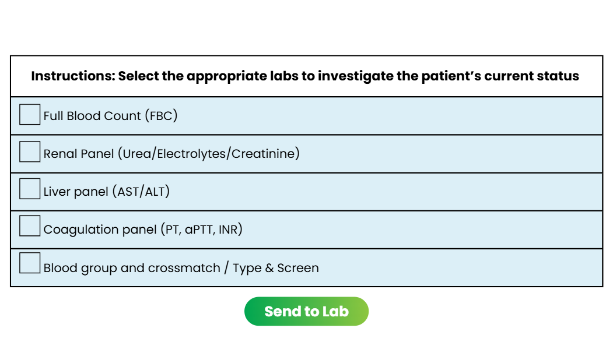
Figure 15: Scene 3 quiz prompt assessing learner identification of correct color-coded collection tubes
Scene 4: Medical Intervention (Uterotonics Administration)
In this scene, the simulation progresses from diagnostic preparation to active hemorrhage control. Following the establishment of IV access and completion of blood investigations, the patient continues to exhibit moderate bleeding with signs of physiological compensation (tachycardia with relatively stable blood pressure). This stage emphasises timely pharmacological intervention alongside physical techniques to promote uterine contraction and reduce ongoing blood loss. It reinforces that postpartum hemorrhage (PPH) management requires both mechanical (uterine massage) and medical (uterotonics) approaches simultaneously.
The Task: The student is first prompted by the nurse to initiate uterine massage, supported by an on-screen animation that the learner must follow. This reinforces immediate first-line management for uterine atony. Subsequently, a pop-up appears stating "Start medication," revealing a tray of drugs including Oxytocin, Misoprostol, Tranexamic acid, and Carboprost. The learner must correctly sequence these medications based on standard PPH management protocols. This step ensures that the student understands prioritisation in drug administration rather than random selection, reflecting real-life urgency and decision-making under pressure.
The Quiz Trigger: A sequencing-based interaction requires the learner to arrange the medications in the correct order. Incorrect sequencing prevents progression, reinforcing clinical reasoning in pharmacological management. This aligns with the protocol that Oxytocin is typically first-line, followed by additional uterotonics and adjuncts if bleeding persists. The action then transitions into an animation of the nurse administering the medications, visually linking decision-making to intervention.
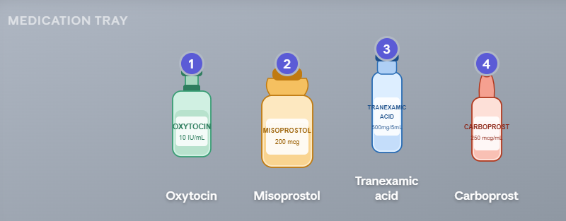
Figure 16: Scene 4 interactive quiz prompt assessing learner identification of correct order of medications
When the right steps are taken, the environment gives instant feedback: vital signs improve (heart rate drops to about 90 bpm and blood pressure stabilizes around 108/70), and bleeding is clearly reduced (less blood on the sheets). "Bleeding is starting to slow, but she still needs close monitoring," the nurse continues, reiterating that continued attention is necessary even when the initial crisis is under control. Finally, a confirmation pop-up appears: "You successfully managed the PPH situation!", marking the completion of this intervention phase while emphasising clinical responsibility beyond immediate stabilisation.
3.4 Core Functionalities
This section outlines the core functionalities of the VR-based postpartum hemorrhage (PPH) training system, focusing on three key components: interaction system, decision-making points, and feedback system. These components are designed to simulate real clinical workflows while promoting active learning, critical thinking, and procedural accuracy. By integrating these elements, the system ensures that learners are not passive observers but active participants in patient management.
3.4.1 Interaction System
The interaction system defines how learners physically engage with the virtual clinical environment. Designed using a guided point-and-click approach, it balances usability with realistic hospital workflows:
- Diagnostic Interactions: Learners interact with the patient and monitors to assess clinical status. Clicking the monitor displays vital signs (heart rate, blood pressure), while interacting with the soaked bedsheet allows learners to estimate blood loss volume.
- Procedural Interactions: The system simulates real-world clinical tasks, such as selecting the appropriate cannula size and inserting an IV line. The system enforces strict task order, blocking progression until essential steps are completed.
- Multimodal Tasks: In later scenes, interactions become complex. Learners must perform uterine massage by following guided animations while simultaneously interacting with a medication tray to administer uterotonics.
- Usability Aids: To manage cognitive load, the system utilises pop-up instructions, allowing the learner to focus on clinical decisions rather than struggling with VR navigation.
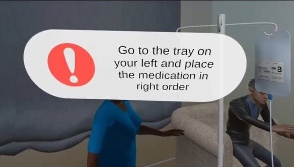
Figure 17: Pop-up guiding the learner to the next task
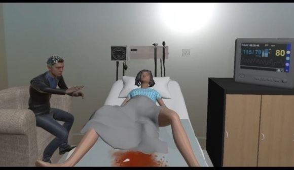
Figure 18: Soaked blood sheet & Interactive patient monitor displaying the vitals
3.4.2 Decision-Making Points
Decision-making points are strategically embedded to develop clinical reasoning and prioritisation skills under time-sensitive conditions:
- Diagnostic Thresholds: Learners must visually estimate blood loss and apply clinical thresholds to officially classify the situation as a PPH, determining the urgency of the intervention.
- Treatment Selection: Learners must justify their actions, such as selecting a large-bore cannula (16G/18G) for rapid fluid resuscitation, or ordering a comprehensive panel of blood investigations (e.g., FBC, coagulation profile, crossmatch).
- Pharmacological Sequencing: Learners are presented with a tray of uterotonic medications (oxytocin, misoprostol, tranexamic acid, carboprost) and must arrange them in the correct clinical order. Incorrect sequencing prevents progression.
- Error-Based Learning: Incorrect decisions do not instantly terminate the simulation. Instead, learners are permitted multiple attempts, building confidence through reflective trial-and-error.
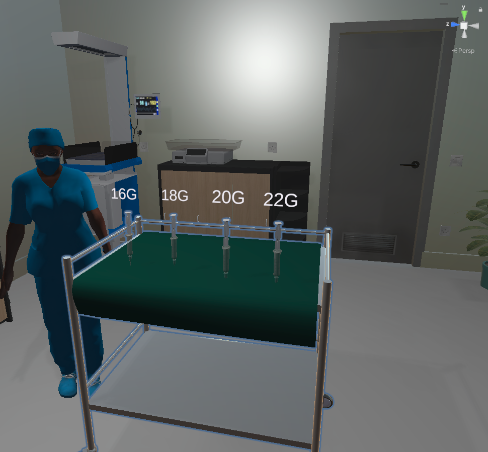
Figure 19: Selection of appropriate cannula size for the IV access
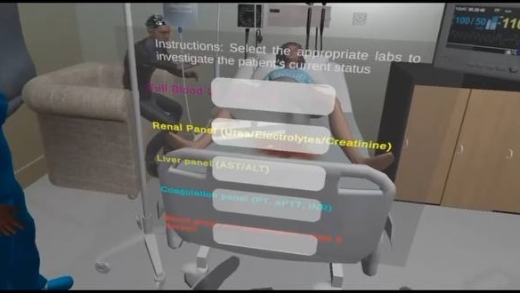
Figure 20: Ordering of appropriate lab tests for the patient
3.4.3 Feedback System
The system provides immediate, continuous, and meaningful responses to learner actions, combining visual, verbal, and physiological feedback:
- Immediate Task Feedback: Correct actions trigger green highlights and positive verbal confirmation from the virtual nurse. Incorrect actions trigger red highlights and corrective audio prompts.
- Real-Time Physiological Response: As the learner successfully administers treatments, the patient's condition dynamically improves, visible blood loss reduces, heart rate decreases, and blood pressure stabilises. This establishes a clear cause-and-effect relationship for the student.
- Immersive Audio Guidance: The virtual nurse simulates clinical teamwork by providing verbal updates on patient status and reminding the learner to act quickly, maintaining a sense of urgency without breaking immersion.
- Summative Debriefing: Upon successful stabilisation, a confirmation message appears. This is followed by a scaffolding reduction (where guidance fades as the learner progresses) and a final review phase where learners can reflect on their clinical performances.
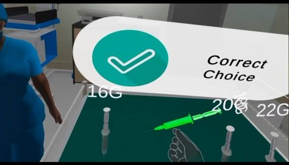
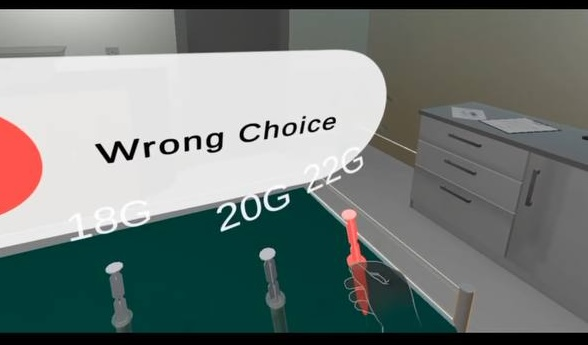

Figures 21, 22, 23: Screenshots of the PPH VR Simulation demonstrating the immediate feedback system and real-time physiological response during clinical decision-making tasks.
4. Technical Implementation & Simulation Design
4.1 Environment design
The environmental design of the VR simulation was guided by the clinical authenticity concept, which ensured that the virtual delivery ward is sufficiently representative of a real labor ward environment to facilitate procedural instruction. While visual fidelity was not the project's primary goal, it was critical that the environment seemed familiar and contextually appropriate, allowing learners to engage with the clinical scenario without being distracted.
The virtual ward was created using Unity's 3D workspace, and the spatial arrangement of medical equipment was designed to mimic a typical delivery room layout. The patient bed is the major focus point, flanked by IV stands, medication trolleys, and physiological monitors placed in therapeutically logical areas. This purposeful layout compels the learner to physically turn and locate equipment within the area, developing fundamental situational awareness as they go through the scenario. Lighting was set to be clinical and bright, creating a calm baseline setting that changes tone as the emergency condition is activated.
The scene includes 3D assets such as a patient model, detailed medical hardware including varied sized cannulas, and specific uterotonic vials on the medication tray. These elements were included not for decorative purposes but to ensure that the procedural interactions within the simulation, such as selecting the correct cannula size or identifying the right medication, are grounded in a recognisable clinical context.


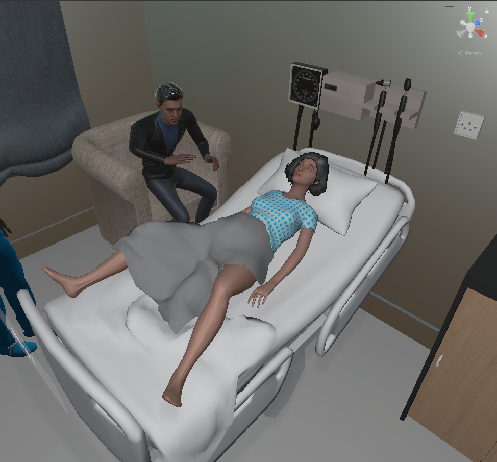
Figure 24, 25, 26: Overview of the virtual delivery ward environment
4.2 Prototype Walkthrough
The VR-based postpartum hemorrhage (PPH) simulation's entire user experience is described in the prototype walkthrough. From routine postpartum monitoring to emergency care and stabilization, the system is intended to lead the student through a realistic clinical scenario. As each step reflects actual workflows, the student can actively participate in patient care while responding to a scenario that is always changing.
Stage 1: Entry into the Clinical Environment
The simulation begins with the learner entering a virtual delivery ward. The patient is positioned on the bed, accompanied by the partner, creating a realistic postpartum environment. Medical equipment such as the vital signs monitor, IV stand, and medication trolley are visible within the surrounding.
At this stage, the environment appears stable, allowing the learner to familiarise themselves with the surroundings. The monitor displays baseline vital signs, and no immediate action is required. This initial phase serves as an orientation period, helping the learner understand the layout of the room and identify key equipment.
Stage 2: Recognition of Clinical Deterioration
The scenario escalates as the patient begins to show signs of deterioration. The vital signs monitor emits rapid beeping sounds, indicating an increase in heart rate. The nurse provides a verbal prompt, alerting the learner that the patient has soaked multiple sheets.
The learner is required to assess the patient's condition by interacting with the monitor. After selecting, vital signs are displayed, displaying tachycardia and a drop in blood pressure.
To better assess the situation, the learner interacts with the soaked sheets. A prompt appears, requiring selection of the estimated blood loss volume. Choosing the correct range confirms that the patient is experiencing postpartum hemorrhage. This moment marks the transition from routine monitoring to emergency response, emphasising the importance of early recognition.
Stage 3: Immediate Intervention - IV Access
Following the diagnosis of PPH, the learner is prompted to initiate immediate intervention. The nurse indicates the need for IV access.
A selection interface presents different cannula sizes. The learner must choose the appropriate one to proceed. If an incorrect option is selected, feedback is provided, prompting the learner to reassess their choice.
Once the correct cannula is selected, the learner inserts the IV line by interacting with the patient's arm. An animation confirms the successful placement. The learner then activates IV fluids through an on-screen prompt. This stage highlights the urgency of stabilising the patient's circulation.
Stage 4: Diagnostic Evaluation - Blood Investigations
With IV access established, the learner proceeds to order blood investigations. A prompt appears, instructing the learner to select relevant laboratory tests.
Multiple options are displayed, including full blood count, coagulation profile, renal function tests, liver function tests, and blood group with crossmatch. The learner must select all appropriate investigations to continue. This step reinforces the importance of comprehensive assessment in managing PPH.
After the correct selections are made, the nurse collects the blood samples and sends them to the laboratory. This action is represented through a brief animation, maintaining continuity within the simulation. The learner is reminded that diagnostic results will support further management decisions.
Stage 5: Active Management - Uterine Massage
As the patient continues to bleed, the scenario progresses into active management. The nurse prompts the learner to perform uterine massage, a key first-line intervention for uterine atony.
An animation appears to guide the learner through the correct technique. The learner follows the visual cues to perform the action, reinforcing procedural understanding. This stage emphasises the importance of immediate physical intervention alongside medical treatment.
Stage 6: Pharmacological Intervention - Uterotonics
Following uterine massage, the learner is prompted to initiate pharmacological treatment. A medication tray appears, displaying uterotonic drugs including oxytocin, misoprostol, tranexamic acid, and carboprost.
The learner must arrange these medications in the correct order of administration. This sequencing task reflects real clinical practice, where treatments are prioritised based on effectiveness and urgency. Incorrect sequencing prevents progression, requiring the learner to reconsider their choices.
Once the correct sequence is established, an animation shows the nurse administering the medications. This transition from decision-making to action reinforces the connection between clinical reasoning and intervention.
Stage 7: Patient Response and Stabilisation
Following successful intervention, the simulation provides immediate feedback through changes in the patient's condition. Visual indicators show a reduction in bleeding, with less blood visible on the sheets. The environment becomes less chaotic, reflecting improved control of the situation.
Simultaneously, the patient's vital signs begin to stabilise. The heart rate decreases, and blood pressure returns to a safer range. These changes demonstrate the effectiveness of the learner's actions, reinforcing the relationship between timely intervention and positive outcomes.
The nurse provides verbal feedback, stating that the bleeding is slowing but continued monitoring is required. This emphasises that while the acute crisis is managed, patient care must continue.
Stage 8: Scenario Completion and Outcome Feedback
Once the patient is stabilised, the simulation presents a confirmation message indicating successful management of the PPH scenario. This marks the completion of the active intervention phase.
The message serves as both feedback and motivation, reinforcing the learner's achievement. It also signals the transition from active management to reflection and learning consolidation.
Overall User Experience
The prototype walkthrough demonstrates a cohesive and immersive learning experience, where the learner progresses through a realistic clinical scenario in a structured and engaging manner. Each stage builds upon the previous one, reinforcing both procedural skills and clinical reasoning.
By integrating interactive tasks, real-time feedback, and progressive scenario development, the simulation enables learners to actively participate in managing postpartum hemorrhage. This approach enhances engagement, improves knowledge retention, and prepares learners for real-world clinical situations.
5. VR Development Iteration
5.1 Iterative Development: Initial to Refined Prototype
The development process for the VR PPH simulation involved an iterative prototyping approach, in which a number of design-build-test phases were executed. The development process involved addressing specific challenges, moving from the initial broad story model design to a more refined procedural trainer design. This change was necessary due to the reduction of cognitive load while increasing the depth and accuracy of clinical interaction.
5.1.1 Initial Prototype: A Comprehensive Clinical Journey
The initial prototyping phase also known as interim prototype (before redirection of scope) was guided by five key development objectives: VR storyboarding, delivery room environment construction, PPH patient avatar, dynamic audio integration, and empathy role-play training. These shaped a series of four iterative builds, each targeting a distinct technical problem from establishing interactive UI and AI character animation (Prototypes 1 & 2), to solving event sequencing via a centralised "Director" script (Prototype 3), and testing visual and audio realism alongside conversational AI (Prototype 4).
Table 3 summarises the four prototypes from the initial development phase:
| Prototype | Problem Addressed | What Was Built | Key Learning |
|---|---|---|---|
| Prototype 1: The Quiz | How to prompt the user's clinical knowledge within the simulation | A simple UI quiz built in Scene1Manager, with a FinalSequence() function to hand off control between scenes | Confirmed that interactive UI can be built in Unity and scene transitions work reliably |
| Prototype 2: AI Animation Engine | How to build a believable, scriptable character animation system | Combined Unity's NavMeshAgent (for AI pathfinding) and Animator system (C# boolean switches like isWalking, isTalking to trigger animations) | Successful proof-of-concept for creating a controllable, clinically believable character |
| Prototype 3: Event Sequencing | How to ensure clinical events occur in the correct order and at the correct time | A centralised "Director" script (Scene2Manager) using Sphere Collider triggers (proximity detection) and Coroutines (yield return WaitForSeconds) to time events precisely | Confirmed that complex, timed, player-reactive clinical scenarios can be reliably built in Unity |
| Prototype 4: Realism and Empathy | How to increase sensory immersion and test unscripted patient interaction | Three parallel components: (1) "sheet swap" method for blood simulation, (2) audio comparison between YouTube clinical audio and ElevenLabs synthetic voice, (3) conversational AI patient using Google Gemini | Sheet swap proved viable as a starting point; ElevenLabs offered better control for clinical scripting; Gemini confirmed unscripted conversations are technically feasible but too complex for current scope |
Table 3: Four prototypes from the initial development phase
The interim prototype was designed as a comprehensive simulation, featuring over 20 individual decision nodes covering tasks such as moving the neonate to a baby trolley and simulating family communication. As illustrated in Figure 2, this fragmented logic tree created interaction fatigue during testing in which users frequently stalled in the early "alerting staff" phase, leaving insufficient time to engage meaningfully with the core clinical interventions. The backend's linear structure also proved brittle as a single missed trigger could stall the entire simulation, failing to reflect the parallel, fast-paced nature of a real obstetric crisis.
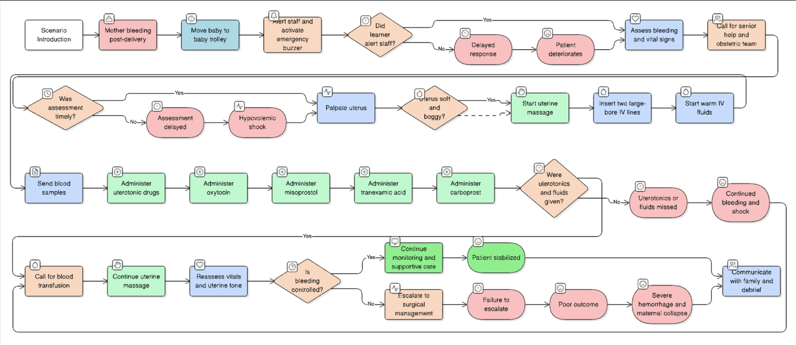
Figure 27: PPH Management Flow Chart (Version 1)
5.2 Strategic Scope Refinement
Following the interim presentation and clinical consultations, the project underwent a strategic scope refinement. The empathy and conversational AI components, while promising in concept, introduced a level of complexity that could not be adequately validated within the remaining development window. Attempting to manage both soft-skill acquisition and complex clinical algorithms within a single VR session created unnecessary cognitive friction and diluted the technical rigour required for the simulation's core purpose.
The decision was made to narrow the project's focus by removing the empathy and communication components, allowing engineering efforts to be fully redirected towards procedural flow accuracy and the assessment of learners' clinical knowledge at key decision points throughout the PPH management sequence. The simulation had always centred on uterine atony as the primary clinical pathway, and this refinement ensured that the depth and rigour of that core experience was not compromised by overextension into soft-skill training.
| Feature | Initial Prototype | Refined Prototype |
|---|---|---|
| System Focus | Holistic Ward Orientation | High-Fidelity Procedural Mastery |
| Scope | Clinical & Empathy Integration | Dedicated Technical Logic |
| Logic Structure | Fragmented Linear (20+ Nodes) | Modular Block-Based (4 Phases) |
| User Priority | Environmental Task Management | Diagnostic Decision-Making |
| Pedagogy | Rigid Sequential Prompting | Diagnostic-Led Triggers |
Table 4: Initial Vs Refined Prototype Feature Comparison
5.3 Refined Final Prototype: A Focused Clinical Experience
The final prototype incorporates all the technical lessons learned from the first four prototypes to create a clinically sound simulation of PPH. The fragmented nodes have been reconstructed to reflect four clinical stages: Recognition, Immediate Actions, Intervention, and Reevaluation as seen in the improved flowchart (Figure 27). The modularity allows for seamless user interaction since the learner will choose tasks based on their clinical priority without having to go through the entire task list.
Figure 28: Refined Flowchart of PPH management
Key improvements in the final prototype include clearer task-specific on-screen prompts to reduce cognitive overload, an enforced gated workflow ensuring correct procedural sequencing, and progressive vital sign updates that respond dynamically to learner actions. Together, these refinements position the simulation as a more focused and technically rigorous training tool, designed to bridge the theory-practice gap in emergency obstetric care.
6. Preliminary User Testing
6.1 Methodology
This study adopts a mixed-methods approach, integrating both quantitative and qualitative techniques to evaluate the usability and educational effectiveness of the VR simulation developed for PPH training. This approach enables a comprehensive assessment by combining measurable usability outcomes with in-depth expert insights on clinical and pedagogical relevance.
6.1.1 Quantitative Approach
A mixed method approach will be used in this investigation, where the VR simulation for PPH education is assessed through the application of both quantitative and qualitative methods to determine its usability and effectiveness as a learning tool.
For the quantification part of the investigation, the System Usability Scale(SUS) will be applied. This system is extensively validated and used to evaluate the usability of systems, especially within the context of healthcare technologies. The questionnaire comprises 10 items, which are rated on a five-point Likert scale, from 1 (Strongly disagree) to 5 (Strongly agree). Important factors considered in the system include system usage, user confidence, and the integration of various features within the system. Examples of statements in this scale are as follows: Example items include "I found the system easy to use," "I felt confident using the system," and "I found the various functions in this system were well integrated."
Note: Please refer to Figure 18 in the Appendix for the detailed SUS Questionnaire.
The participants, consisting of 8-10 students, will conduct the SUS test following their engagement with the VR simulation. This sample size is ideal for usability testing, given that the purpose here is to establish trends about usability rather than make generalisations about the population. The SUS has been chosen due to its ease of administration and capacity to provide a usability score against established benchmarks.
SUS scores are rated between 0 and 100, whereby 68 represents average usability. Those above this value reflect high usability, and this is key for this virtual reality simulation as poor usability could impede the learning objectives, especially regarding how one needs to proceed to handle a PPH situation.
Quantitative analysis will involve calculating the mean SUS score, standard deviation, and individual item responses to identify usability strengths and weaknesses. These results will support comparisons across iterations of the prototype and guide improvements.
6.1.2 Qualitative Approach: Expert Clinical Review
In addition to quantitatively analysing user responses, a qualitative analysis was undertaken through a professional clinical review. Dr. Arundhati, a practising obstetrician who has experience in dealing with cases of PPH due to uterine atony. After using the final VR prototype, she gave her answers to a set of open-ended questions:
- "Is the sequence of events clinically accurate for uterine atony-induced PPH?"
- "Are the decision points realistic for junior doctors or medical students?"
- "Would this simulation be useful for training novice learners?"
Her responses were recorded and analysed to identify key insights regarding clinical accuracy, realism, and educational value, allowing for a deeper understanding of how well the simulation aligns with real-world clinical practice.
Her qualitative insights also surfaced a set of forward-looking recommendations, spanning scene realism, pharmacological completeness, interaction design, and audio integration. The following recommendations provide more context than what can be gathered from quantitative metrics like the SUS.
6.1.3 Mixed-Methods Rationale and Importance
Quantitative and qualitative methodological approaches are used together for a comprehensive assessment of the VR simulation. On one hand, the SUS allows gathering some objective data about its usability, and on the other hand, an expert clinical analysis reveals more about the clinical accuracy and educational relevance of the simulation. This strengthens the overall validity of the evaluation.
In VR medical training, both usability and accuracy are crucial factors as low usability will decrease engagement, and incorrect content will negatively affect the educational value of the solution. This is why an approach that focuses on assessing both of the factors is essential for making sure that the core goals of the simulation are achieved, namely increasing the user's confidence and providing a good understanding of how to handle PPH. The analysis combines SUS benchmarking with thematic findings from Dr. Arundhati's review, with future improvements guided by the usability issues and expert recommendations identified through this process.
6.2 Expert Clinical Evaluation
Expert clinical evaluation plays an essential part in verifying any simulation tool designed for training purposes because it makes sure that it meets the requirements of a professional training environment and is consistent with actual clinical practice. For these reasons, the VR simulation prototype was evaluated by Dr. Arundhati, an active obstetrician, experienced in the treatment of post-partum hemorrhage. The expert clinical evaluation was based on a direct trial of the VR prototype, where Dr. Arundhati gave her feedback based on her clinical expertise. These results will be discussed below with respect to strengths and future recommendations.
6.2.1 Strengths Identified
Dr. Arundhati had positive comments on the overall effectiveness of the simulation exercise. The delivery room scene was highly appreciated as realistic and excellent, affirming that the spatial layout and clinical equipment are sufficiently representative of an actual obstetric setting which is a foundational requirement for effective immersive training. Additionally, the clinical scenario was considered as elaborate and accurate as Dr. Arundhati assured that the steps depicted in the scenario follow the proper steps in PPH management, which is the goal of the simulation exercise. She further acknowledged the level of development achieved within a short timeframe.
6.2.2 Areas Requiring Improvement
Scene Realism
The following shortcomings were observed with regard to the behaviour of characters and progression of emergencies. She offered suggestions that the realism element in this simulation needs to be improved further in the future. The husband character can be represented as standing and panicked since such was the level of emotion involved in this situation of an obstetric emergency. Another suggestion was for more midwives to enter the room to reflect the multi-disciplinary team response expected in practice.
Pharmacological Completeness
Dr. Arundhati affirmed that the simulation currently contains important uterotonic drugs, and suggested that in subsequent simulations, the drug trolley should be updated to contain injections of Syntocinon and Ergometrine, in addition to other drugs contained in the drug trolley. The inclusion of these drugs together with the ones already in the drug trolley will increase the realism of the simulation exercise.
Blood Volume and Haematological Investigations
According to Dr. Arundhati, the amount of blood present in the scenario could be made higher for subsequent simulations to emphasise the clinical importance. The increased visualisation of the amount of blood loss would better communicate the critical nature of the case to the learners. She further stated that incorporating the process of collecting the blood sample and conducting a group and cross-matching test would be a useful feature for future simulations. Although not an essential part of the clinical pathway, she believed that it would enhance the learning process for the learners.
Pictorial Blood Loss Estimation Aid
Dr. Arundhati recommended a visual chart estimating blood loss to be added as a feedback pop-up after the question on blood loss estimation. Since this is common practice in clinical practice, she highlighted that adding this feature would enhance the training even more by providing learners with a real-life evidence-based skill related to PPH management.
Usability: Colour Contrast and Audio
Dr. Arundhati suggested two usability recommendations for its future development. The first recommendation is to introduce color coding between the questions and answers in order to enhance readability and reduce cognitive complexity in the visually demanding VR environment. The second recommendation was to incorporate ambient audio into the future iterations of the simulation, which may include clinical alarms, sounds from monitors, conversations among hospital staff, and instructional audio cues.
6.2.3 Summary
According to Dr. Arundhati's assessment, the simulation created a solid and credible clinical platform with a realistic environment, accurate steps involved, and an overall good execution. Her observations were quite positive and future-oriented, providing a number of suggestions for further improvement of the simulation in its subsequent versions. Some of these include improving the believability of the scene by making characters more interactive, adding extra uterotonics such as Syntocinon and Ergometrine to the drug trolley, and finding ways of making interactions more user-friendly through such features as color contrast, audio addition, and an image-based method for estimating blood loss. Moreover, she suggested adding more visibility of the blood volume and conducting a group and cross-match test to improve the clinical aspect of the simulation.
6.3 Results and Analysis
6.3.1 Quantitative Results: System Usability Scale (SUS)
To evaluate the usability of the VR PPH simulation, 8 participants (students) completed the standard 10-item System Usability Scale. The raw data and calculated scores are presented in the table below.
| Participant | Background | Q1 | Q2 | Q3 | Q4 | Q5 | Q6 | Q7 | Q8 | Q9 | Q10 | Final SUS Score |
|---|---|---|---|---|---|---|---|---|---|---|---|---|
| Pooja Haridas | Computer Science | 4 | 2 | 5 | 1 | 4 | 2 | 4 | 1 | 4 | 2 | 85.0 |
| Raja Suleka | Radiography | 3 | 3 | 3 | 2 | 4 | 3 | 4 | 2 | 3 | 3 | 60.0 |
| Nikhil Babu | Computer Engineering | 5 | 1 | 5 | 1 | 5 | 1 | 5 | 1 | 5 | 1 | 100.0 |
| Srinivasan Udhaya | Biomedical Engineering | 4 | 2 | 4 | 2 | 4 | 2 | 4 | 2 | 4 | 2 | 75.0 |
| Vikki Lim | Physics | 2 | 4 | 3 | 4 | 2 | 3 | 3 | 4 | 2 | 4 | 37.5 |
| Lixin How | Biological Engineering | 4 | 2 | 4 | 1 | 4 | 2 | 5 | 1 | 4 | 2 | 82.5 |
| Claire Goh | Computer Engineering | 3 | 2 | 4 | 2 | 4 | 3 | 4 | 2 | 3 | 2 | 67.5 |
| Dhanush Selvaraj | Biomedical Science | 4 | 1 | 4 | 2 | 5 | 2 | 4 | 1 | 4 | 1 | 85.0 |
| Mean | 74.1 | |||||||||||
Table 5: Raw SUS Responses and Calculated Scores
Analysis Note: The mean score of 74.1 places the simulation in the "B" grade category (Good to Excellent). This indicates that the VR tool is generally intuitive for students. However, the lower score from P5 (37.5) highlights that users with lower baseline VR familiarity may find the system "unnecessarily complex" (Q2) without a proper tutorial.
6.3.2 Comparison: User Perception vs. Expert Clinical Review
The results of the SUS were triangulated with the expert review provided by Dr. Arundhati to identify areas where usability meets clinical necessity.
| Domain | SUS User Insight (Students) | Expert Clinical Insight (Dr. Arundhati) |
|---|---|---|
| Learnability | High scores on Q7 suggest students felt they could learn the system quickly. | Dr. Arundhati confirmed the scenario is "elaborate and procedurally accurate" for novices. |
| Confidence | Q9 scores remained high (Avg: 3.6/5), showing the VR environment didn't intimidate users. | Dr. Arundhati noted the environment is "very good and realistic," grounding user confidence. |
| System Complexity | Some variability in Q2 suggests the interface (UI) could be more distinct. | Matches Dr. Arundhati's recommendation for better colour contrast and audio cues. |
Table 6: Findings Triangulation
6.3.3 Summary of Key Findings
By combining the student SUS data and Dr. Arundhati's feedback, the study identifies three primary focus areas for the next development phase:
- Strengthening Immersion: While students found the system "well integrated" (Q5), the expert suggests adding more "clinical noise" (alarms, staff) to mimic the high-pressure reality of PPH.
- UI Refinement: The divergence in scores for Q3 (Ease of Use) suggests that the visual prompts for drugs and blood loss estimation need the "pop-up" aids and colour differentiation suggested by the expert.
- Clinical Depth: The high usability score validates that the platform is ready to handle the more complex pharmacological additions (Syntocinon/Ergometrine) and haematological steps suggested by Dr. Arundhati without overwhelming the user.
7. Discussions and Recommendations
7.1 Project Limitations
Despite the potential of Virtual Reality (VR) as an innovative educational tool for Postpartum Hemorrhage (PPH) training, this project has several limitations that should be acknowledged.
| S/N | Limitation | Description | Impact on Project |
|---|---|---|---|
| 1 | Limited Clinical Realism | The virtual environment, while immersive, cannot fully replicate the sensory complexity and psychological pressure of a live obstetric emergency, which may affect the transferability of skills to actual clinical practice. | Skills developed in VR may not fully transfer to actual clinical practice, particularly for hands-on procedural tasks requiring physical precision. |
| 2 | Narrow Scenario Scope | The simulation covers only a single, linear sequence of PPH management and does not expose learners to the full clinical spectrum of PPH presentations or alternative management pathways. | Limits the simulation's ability to prepare students for the complete range of obstetric emergencies they may encounter in a real ward setting. |
| 3 | Small User Testing Sample | User testing was conducted with a limited number of participants, comprising a small group of peers, medical students, and a clinical advisor, rather than a larger and more diverse cohort of qualified clinicians. | Reduces the generalisability of usability findings and may not fully reflect the experience of the broader intended target population. |
| 4 | Evaluation of Learning Outcomes | The project does not include long-term assessments to evaluate knowledge retention, clinical performance, or real-world impact. | Without rigorous outcome data, it remains difficult to determine the true educational effectiveness of the simulation. |
| 5 | Clinical Consultation Constraints | Coordinating with clinical advisors was challenging given the demanding schedules of practising doctors, with sessions frequently rescheduled due to on-call duties and ward commitments. | Constrained the frequency and depth of expert feedback at certain development stages, limiting clinical validation at key design decision points. |
Table 7: Project Limitations
7.2 Key Learnings
The following insights were derived through the team's iterative development experience, observation of users in test sessions, and consultations held with Dr. Arundhati. These reflections are not validated findings, but valuable lessons learned by the team and need further study through future research.
| S/N | Learning | Key Insights | Source |
|---|---|---|---|
| 1 | Environmental stressors | Simulating sensory overload such as visual blood loss appeared to help learners move past cognitive freezing and respond more decisively under pressure | Observed during user testing |
| 2 | Clinical precision | Students tend to overlook pre-existing risk factors when focused on the immediate emergency; embedding clinical indicators as active reasoning checkpoints encouraged more anticipatory thinking | Clinical consultation with Dr. Arundhati |
| 3 | Physics-based interaction | Moving away from point-and-click mechanics toward gesture-based procedural inputs appeared to better support procedural familiarity and motor skill development | Iterative development experience |
| 4 | Scope management | Narrowing the project scope following the interim assessment produced a more technically stable and clinically accurate prototype than a broader approach would have allowed | Team reflection |
| 5 | Iterative clinical collaboration | Regular consultations with Dr. Arundhati ensured that procedural details such as drug dosages and intervention sequencing reflected real-world obstetric standards | Clinical consultation with Dr. Arundhati |
| 6 | Feedback mechanisms | Embedding real-time visual consequences into the environment appeared to be a more effective form of learning reinforcement than relying on a facilitator | Observed during user testing |
Table 8: Key Learnings
These lessons combined prove that the true value of VR training is found when physiological principles, stress, and interaction are integrated to form a holistic lesson that can't be duplicated by books or simulations alone.
7.3 Scalability and Future Features
Although the present prototype provides an excellent framework for training procedures individually, there is much room for developing a comprehensive training system. Specifically, implementing a patient avatar that demonstrates different reactions depending on a participant's clinical choices would be one of the most effective enhancements at this point. Such an addition would mean the inclusion of adaptive physiological characteristics of patients, such as vital signs that change as a result of clinical decisions made, vocal signs of pain when performing uterine massage, and visible deterioration resulting from the lack of timely intervention. In addition, multiplayer options should be added, allowing several participants to play their role in the ward and thus receive not only the skills of performing procedures but also training in how to delegate tasks and communicate within a team.
Implementing voice recognition software can also enhance the system through automatic debriefing after a procedure. Specifically, each student would explain what actions have been taken in a simulation, which will be analysed independently by the system to evaluate their recollection of details and communication skills. Finally, the standalone quality of Meta Quest 3 allows for easy scalability of the simulation platform.
Note: Please refer to Figure 19 in the Appendix for the detailed project timeline Gantt chart
7.4 Conclusion
The creation of this VR simulation for postpartum hemorrhage (PPH) management is an essential step in addressing the disparity between medical education and actual clinical practice. The simulation was driven by a clear clinical gap, with PPH being the primary cause of maternal mortality but rarely seen enough for most students to have had firsthand experience with managing it effectively, resulting in students graduating without ever taking charge of a PPH case (Say et al., 2014). Traditional educational methods, such as lectures and manikin-based learning, do not provide sufficient exposure to the stress of an actual situation in the labor ward.
The use of realistic bleeding and declining vitals while making critical decisions on the fly, recreates the environment needed to acquire clinical skills. All scenarios were created in collaboration with clinical experts from the National University Hospital to reflect realistic interactions, from establishing IV access to the proper sequence of uterotonic administration.
Running on a standalone Meta Quest 3 device, the simulation demonstrates that medical training can be provided in a convenient and portable manner at a time and pace that suits the student's schedule. In contrast to a traditional training session in which feedback comes from the instructor, the simulation responds to the student's decisions, enabling self-guided learning and repetition. Overall, the end result is the development of an effective product that is both technologically sound and clinically accurate. Most importantly, the project ensures that a student's initial exposure to a postpartum hemorrhage does not come from an actual patient.
8. Project Workload Distribution
| Member | Contributions |
|---|---|
| Manivannan Deepika | Led the development of the narrative storyboard, translating clinical workflows into structured scene-by-scene interactions for the VR simulation. Communicated with the 3D artist to ensure virtual environment assets accurately reflected the layout and equipment of a real delivery ward. Liaised with Dr Arundhati to derive and validate the clinical workflow, ensuring the simulation accurately reflected real-world medical procedures and decision points. Authored Sections 5, 6 of the group report and contributed supporting writing across other relevant areas. |
| Nandhakumar Ragavi | Developed and maintained the Gantt chart to track project milestones and ensure timely progress across all phases of development. Consolidated the PPH management process and scenario logic into a clear, structured flowchart to serve as a quick visual reference for the team throughout development. Liaised with Dr Arundhati to derive and validate the clinical workflow, ensuring the simulation accurately reflected real-world medical procedures and decision points. Authored Sections 1 and 5.2 of the group report and provided supporting writing contributions across other relevant areas. |
| Ranjith Kaliyamoorthy | Led Unity development across all major iterations of the VR application, taking ownership of core system architecture, interaction logic, and scene progression. Iteratively modified the simulation design in response to feedback from the project supervisor and clinical advisor, ensuring technical accuracy and educational alignment. Authored Section 3 and provided supporting writing contributions across other relevant sections of the report. |
| Y Snega | Assisted in the development of the narrative storyboard, contributing to the translation of clinical workflows into structured scene-by-scene VR interactions. Led the development of the "John" persona, mapping key training gaps and educational needs to inform the user-centred design of the simulation. Liaised with Dr. Arundhati at NUH to gather clinical feedback and ensure the simulation accurately reflected real-world obstetric workflows. Authored sections 2, 3.3, 4, 7 of the group report and provided supporting writing contributions across other relevant areas. |
Table 9: Project workload distribution
9. References
- Say, L., Chou, D., Gemmill, A., Tunçalp, Ö., Moller, A. B., Daniels, J., Gülmezoglu, A. M., Temmerman, M., & Alkema, L. (2014). Global causes of maternal death: A WHO systematic analysis. The Lancet Global Health, 2(6), e323–e333. Global causes of maternal death: a WHO systematic analysis - The Lancet Global Health
- World Health Organisation. (2023). WHO postpartum haemorrhage summit. World Health Organisation. https://www.who.int/news-room/events/detail/2023/03/07/default-calendar/who-postpartum-haemorrhage-summit
- Rath, W. (2021). Postpartum haemorrhage—Update on problems of definitions and diagnosis. Acta Obstetricia et Gynecologica Scandinavica, 100(12), 2181–2189. Postpartum hemorrhage--update on problems of definitions and diagnosis - PubMed
- Chauke, L., Bhoora, S., & Ngene, N. C. (2023). Postpartum haemorrhage - an insurmountable problem? Case Reports in Women's Health, 37, Article e00482. Postpartum haemorrhage - an insurmountable problem? - PMC
- Lateef, F. (2010). Simulation-based learning: Just like the real thing. Journal of Emergencies, Trauma, and Shock, 3(4), 348. Simulation-based learning: Just like the real thing - PMC
- Monrouxe, L. V., Bullock, A., Cole, J., Gormley, G., Kaufhold, K., Kelly, N., Mattick, K., Rees, C., & Scheffler, G. (2017). How can we help transition medical students into foundation doctors? General Medical Council. How prepared are UK medical graduates for practice? A rapid review of the literature 2009–2014 - PMC
- Ericsson, K. A. (2004). Deliberate practice and the acquisition and maintenance of expert performance in medicine and related domains. Academic Medicine, 79(10), S70–S81. Deliberate practice and the acquisition and maintenance of expert performance in medicine and related domains - PubMed
- Brooke, J. (1986). SUS: A quick and dirty usability scale. Redhatch Consulting Ltd. Agency for Healthcare Research and Quality. https://digital.ahrq.gov/sites/default/files/docs/survey/systemusabilityscale(sus)_comp[1].pdf
10. Appendix
Figures 1–17: Visual Clinical Storyboard (Mockup)
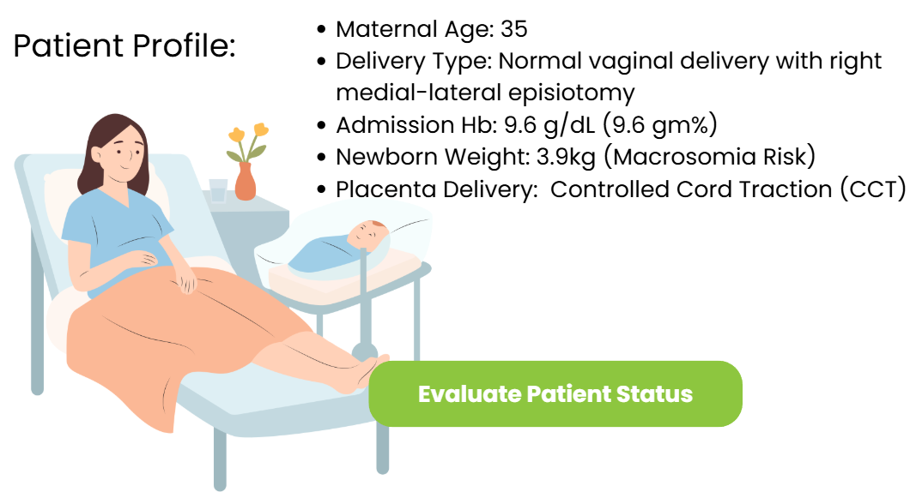
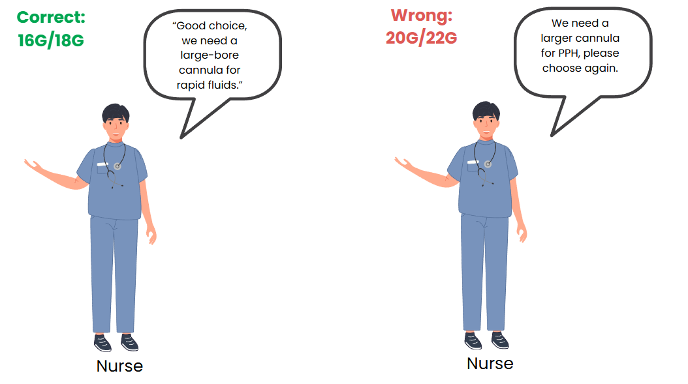
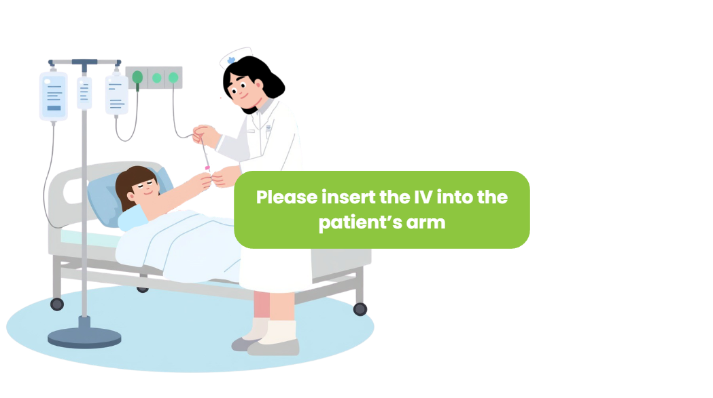
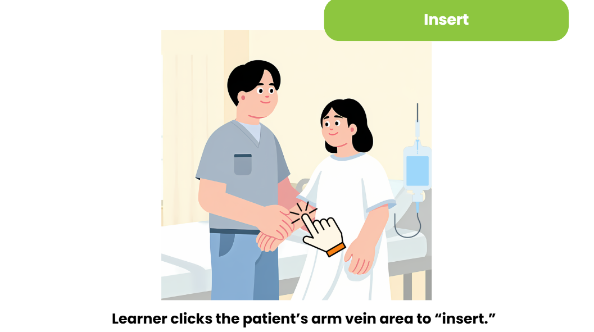

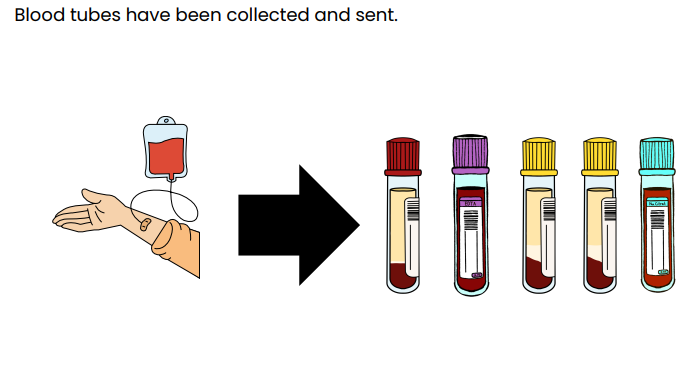
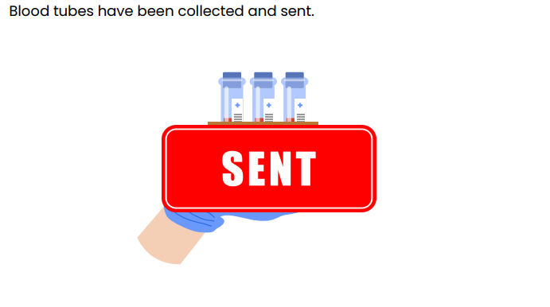
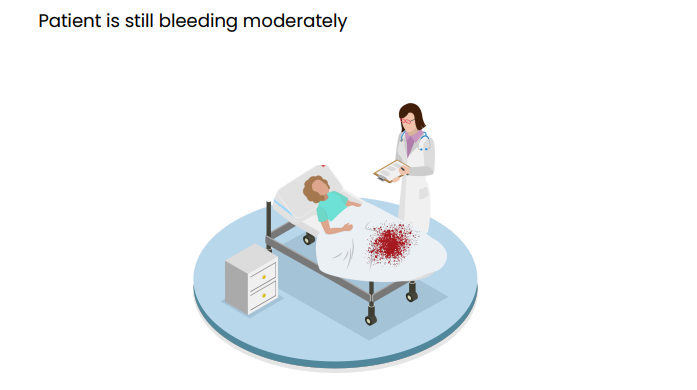
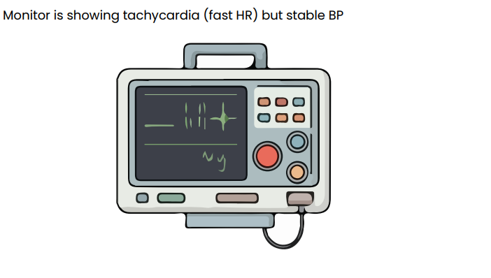
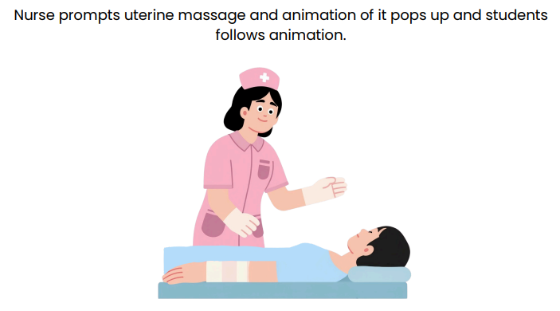
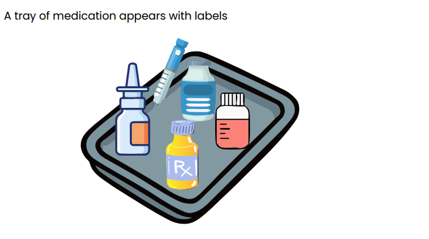
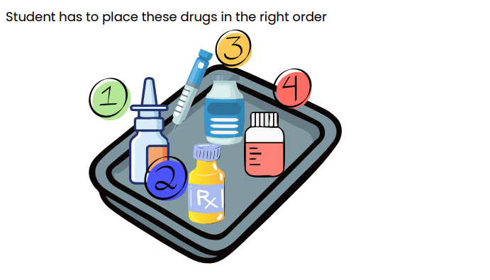
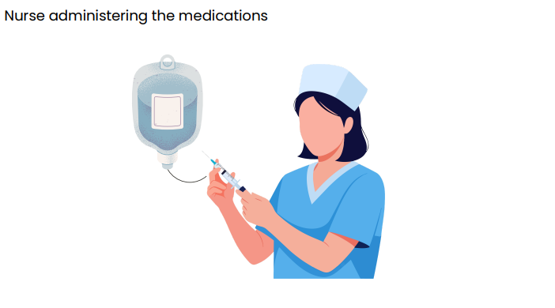
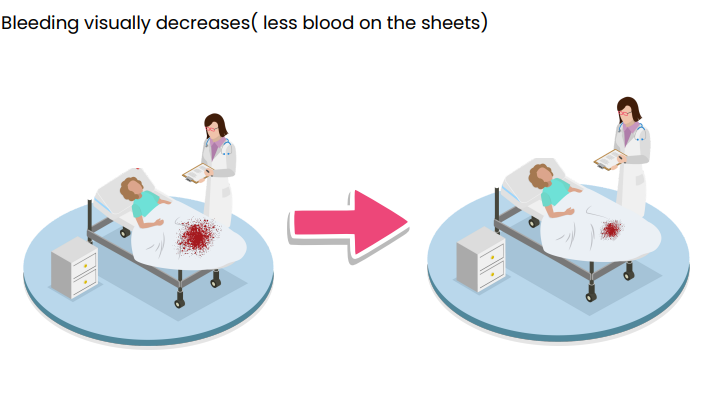


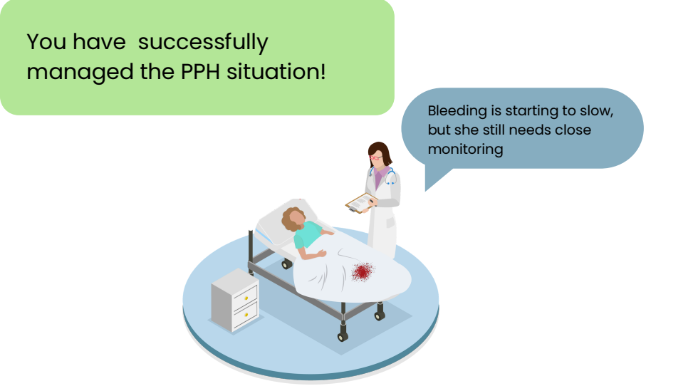
Figures 1-17: Visual Clinical Storyboard (Mockup)
Figure 18: SUS Questionnaire

Figure 18: SUS Questionnaire
Figure 19: Gantt Chart Timeline

Figure 19: Gantt Chart Timeline